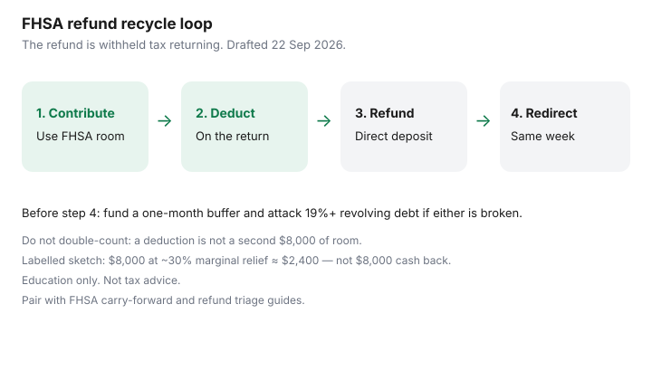

Personal Finance · Canada
Recycle Your FHSA Tax Refund in Canada: A Cash Loop That Speeds the Down Payment
An FHSA contribution can reduce taxable income when you claim the deduction. That often shows up as a larger refund or a smaller balance owing. Households spend the refund on a sofa and then wonder why the down-payment account moved sideways. The recycle loop puts the tax result back into the home plan — without double-counting room or inventing cash that still has to clear the bank.
Education only. Not tax advice. CRA FHSA and refund mechanics framing used 22 Sep 2026.
Disclosure: Tax-software and banking offers are offer types only. Saving Optimizer may later add partner links. We do not currently claim software or issuer partnerships. This is education, not tax advice. Marginal-rate sketches are illustrations, not your return.
Key takeaways
- The FHSA deduction can increase a refund or cut a balance owing; the refund is your withheld tax returning.
- Same-week, move a written amount into FHSA room, a TFSA closing-cost sleeve, or a HISA down-payment pot.
- Do not treat the refund as a second $8,000 of room — room still follows CRA limits.
- High-interest revolving debt and an empty buffer beat recycling into the home account.
- Write whether you claimed the deduction this year or carried it forward.
How the FHSA deduction can create a refund
Contributions to an FHSA are generally deductible, subject to your available FHSA room and how you choose to claim them. Claiming the deduction lowers net income on the return. If you already had tax withheld from pay, a lower balance owing or a larger refund can appear. The refund is not “free FHSA money.” It is your own withheld tax coming back because the deduction changed the math.
You can also carry forward an unused FHSA deduction in situations CRA allows — which means the cash-loop timing might be this spring or a later filing season. Track what you claimed versus what you contributed so April does not surprise you.

Safe ways to redirect the refund into the down-payment plan
- Direct deposit the refund to chequing (CRA My Account direct deposit).
- Same week, move a written amount to the FHSA (if room remains), to a TFSA earmarked for closing costs, or to an unregistered HISA down-payment sleeve — depending on room and eligibility.
- Record the transfer in the household sheet the day it moves, not “when we remember.”
If high-interest revolving debt still sits near 19%+, the refund’s first job may be principal on that card. A faster down payment that keeps a 21% balance is usually a worse household trade. Triage also appears in what to do with a tax refund.
Avoid double-counting room and cash
Common error: contribute $8,000, expect an $8,000 refund, and plan to recontribute $8,000 as if the refund were a second annual room grant. The refund is a fraction of the deduction times your marginal rate, not a 100% rebate. Example education sketch only: $8,000 deducted in a labelled 30% combined marginal situation is about $2,400 of tax relief — not another $8,000 of room.
Room still follows CRA FHSA limits ($8,000 annual with carry-forward rules, $40,000 lifetime). The refund does not create room. It only frees cash that can use room you still have, or fund non-registered closing-cost savings.
Timing contributions vs filing season
Contribute across the year with PADs so you are not inventing $8,000 in the first 60 days of the next calendar year under panic. Claim the deduction on the return for the year that matches CRA’s timing rules for the contribution. When the refund arrives, recycle promptly — refunds left in chequing for six weeks become lifestyle drift.
If you carry a deduction forward, write the year you will claim it. A mental note is how the loop breaks.
When debt payoff beats recycling
Recycle into the home plan when:
- The one-month HISA buffer is intact.
- Revolving balances around 19%+ are gone or already on a fixed payoff you will not starve.
- FHSA or TFSA room (as appropriate) still exists for the dollar you will move.
Pay debt first when a revolving purchase balance would otherwise keep compounding faster than any realistic down-payment timeline benefit. The sofa can wait. The interest rate will not.
A refund-recycle flowchart
| Check | If yes | If no |
|---|---|---|
| Buffer below one month of must-pays? | Fund the HISA first. | Go to the next check. |
| Revolving debt near 19%+? | Extra principal on that balance. | Go to the next check. |
| FHSA room remaining this year / carry-forward? | Contribute refund cash to the FHSA. | TFSA closing-cost sleeve or HISA down-payment pot. |
| Home plan abandoned? | Review RC721-style options and RRSP room; do not idle forever. | Keep the written buy timeline current. |
Sources & date stamps
- CRA, First Home Savings Account — deductible contributions, room limits, qualifying withdrawals (used 22 Sep 2026).
- CRA My Account — direct deposit and refund status; pair with your own contribution ledger.
- Marginal-rate examples on this page are labelled sketches, not your tax return.
Frequently asked questions
Will contributing $8,000 always produce an $8,000 refund?
No. Tax relief depends on your marginal rate and withholding. A labelled 30% sketch on $8,000 is about $2,400 of relief — not another $8,000.
Can the refund create new FHSA room?
No. Room comes from CRA FHSA limits. The refund is cash that may use room you still have.
Should we recycle if we still carry a 21% card?
Usually pay the card first. A faster down-payment fantasy that leaves revolving interest running is a weak household trade.
When does the recycle transfer happen?
The week the refund lands. Money left in chequing drifts. Use CRA direct deposit and a same-week PAD or transfer.
Is carrying an FHSA deduction forward allowed?
CRA allows unused FHSA deductions to be carried forward in described situations. Track the year you will claim so the cash loop stays honest.